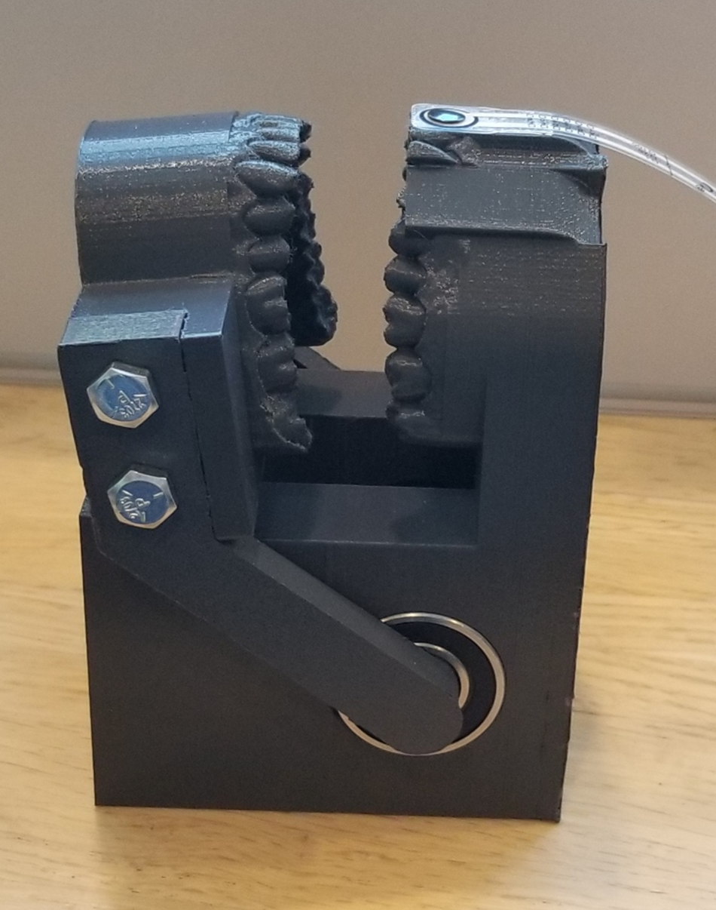
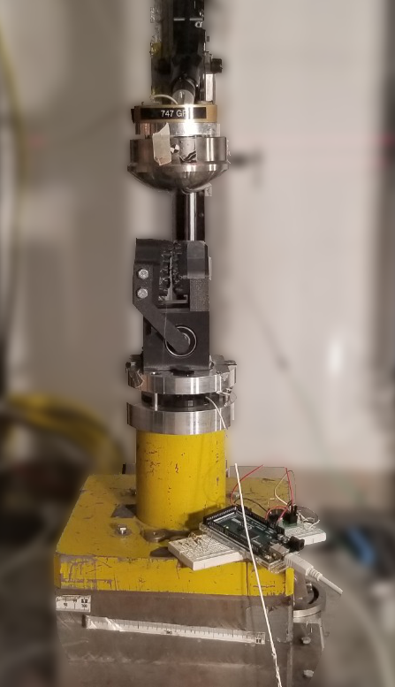

In this project group, there are five members - two biomedical engineering students specializing in mechanical systems and three electrical/computer engineering students. Together, we have split up into a BME and an ECE team - the BME team oversees the development of the jaw test model and the ECE team is in charge of developing the force sensing system. Both teams will collaborate on developing a testing system to detect and measure impact forces on the upper jaw.
Sabrina Bogdanski
BME
Impact Testing Lead
Kieran Wild
BME
CAD Model Design Lead
Serena Foster
ECE
PCB Design Lead
Kayla Kalhous
ECE
Sensor Calibration Lead
Rudra Aryan Potluri
ECE
Programming Lead
Background
Impact during physical activity such as sports is very common and can lead to minor and serious injury. Our capstone project goal is to create a human jaw model with sensors on the teeth to develop a system to measure impact forces on the teeth to create a base for safety rating development for sports mouthguards, specifically in rugby, as there is currently no standardized system set up. We will incorporate biomechanical analysis with electrical systems to complete this project. Data collection and impact force analysis will occur on the front of the jaw/teeth with and without a mouthguard. Due to project constraints, sensors will not be placed on every tooth and bite force will not be measured. After data collection and analysis, recommendations will be made about impact testing methods that can be used across mouthguards in rugby.
Design
Our Design Prototype and testing setup consists of a 3D printed mechanical human jaw model with piezoresistive sensors attached on the
teeth of the upper jaw. The sensors are controlled by an Arduino microcontroller and the impact testing is done by manually adjusting the drop height on the drop
tower and measuring the voltage changes after impact with the sensors with and without mouthguards present.

The jaw model was 3D printed out of PETG filament in multiple pieces. This filament was chosen because it was readily available and stronger than PLA filament,
which is known for easily breaking. The model was printed in four main pieces to increase the speed of the 3D printing process and to minimize the amount
of supports used during printing. The four pieces of the model are the upper jaw, lower jaw and two side arms. The two side arms are connected to the lower
jaw by a set of bolts and nuts on each side of the lower jaw. This assembly is then attached to the upper jaw though a pair of bearings located on the upper
jaw.
The sensor chosen for the project is the Tekscan FlexiForce A201-100, which is a piezoresistive sensor that can be configured to measure up to 4.48kN of
force with a 5 µs response time. It has a sensing area diameter of approximately 1 cm, a width of 1.4 cm, and a length of 19.1 cm.
The sensor is flexible, and the long stem ensures that the sensor can connect to the PCB which will be outside of the direct impact area.
Results and Findings
Impact Testing Set-up and Procedure:
The test setup consists of a drop tower with a 5kg drop assembly and a load cell under a metal plate. The load cell is used for sensor calibration as well as
validation during impact testing. The drop height chosen for our testing was 4cm due to creating a maximum force of 4kN in order to not overload the sensors.

The overall impact test method procedure developed for this project was as follows:
Put safety glasses on. Ensure the drop assembly is secured with a clamp.
Place the testing model onto the drop tower plate so that the sensor will contact the drop assembly head-on.
Tape the testing model in place.
Move the drop assembly to the desired height and record the height.
Ensure the sensor code is ready.
Announce that the drop is about to occur and release the assembly.
Save graphs and record the max peak value.
After re-adjusting the model on the plate, repeat steps 4-7 twice more to ensure repeatability.
Place the mouthguard on the model and repeat steps 4-8.
Without Mouthguard
Mouthguard 1
Mouthguard 2
Mouthguard 3
Each test using the drop tower was repeated three times to ensure repeatability. The force sensors in the load cell are used to validate the sensors during each impact test as well. After testing our model with integrated sensors, we have found that having a mouthguard indeed decreases the force measured on the teeth. Also, between mouthguard types, there was seen to be a correlation between the type of material and design of the mouthguard and the amount of force measured by the sensors. The softer the material, the more force absorption. However, due to repeated testing, the material will be compressed and no longer absorb force but contribute to the amount of force impacting the teeth.
Force Plot without Mouthguard
Force Plot with Mouthguard
Acknowledgment
We would like to thank our supervisor, Dr. Chris Dennison, for making us aware of this topic, for providing us with a testing and production lab, taking the time to give feedback about our project progress, and for helping in any way he could. Thank you to the following people for providing us with electrical components and lab access Brent Sirna, Paul Fedrigo, and Rob Fitchner. We would also like to thank the lab supervisor, Aaron Brice and the lab co-ops, Alan Smith and Catherine Wong, for helping us 3D print and use the impact testing machine. We would like to acknowledge the Department of Biomedical Engineering and Co-operative Education and Work-Integrated Learning Canada (CEWIL Canada) for providing us with project funding. Also, thank you to our course professor, Dr. Sana Shuja, and teaching assistant, Upasana Kapoor, that helped us with any inquiries and remain accountable for our progress throughout the project duration.